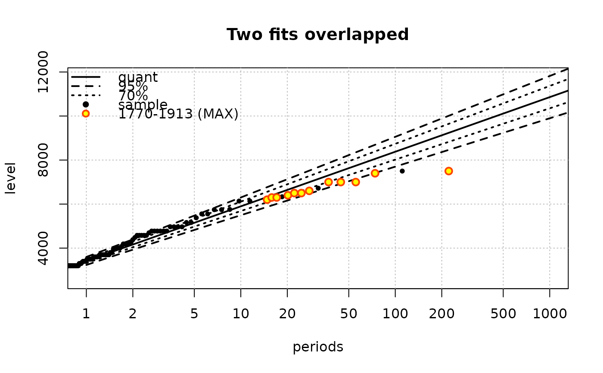

Plot an object of class "Renouv"
plot.Renouv.RdPlot an object of class "Renouv". The plot is a return level plot with some supplementary elements to display historical data.
Usage
# S3 method for class 'Renouv'
plot(x,
pct.conf = x$pct.conf,
show = list(OT = TRUE, quant = TRUE, conf = TRUE,
MAX = TRUE, OTS = TRUE),
mono = TRUE,
predict = FALSE,
par = NULL,
legend = TRUE,
label = NULL,
problim = NULL,
Tlim = NULL,
main = NULL, xlab = "periods", ylab = "level",
posOptions = NULL,
byBlockStyle = NULL,
...)
# S3 method for class 'Renouv'
lines(x,
pct.conf = x$pct.conf,
show = NULL,
mono = TRUE,
predict = FALSE,
par = NULL,
legend = FALSE,
label = NULL,
posOptions = NULL,
byBlockStyle = NULL,
...)Arguments
- x
-
Object of class
"Renouv". - pct.conf
-
Percents for confidence limits (lower and upper). These levels should be found within those computed in the object
x. By default, all computed levels will be used. - show
-
A list with named elements specifying which parts of the return level plot must be drawn. Element
OTis for the the sample points (Over the Threshold data),quantis for the quantile curve (or Return Level curve),confis for the confidence limits. These three elements can be set toTRUEorFALSE. When the elementconfisTRUE, only the percent levels given inpct.confare drawn. Moreover, the levels not already computed in the object given inxwill be drawn only if the predictions are recomputed withpredictset toTRUE. Finally, theMAXandOTSelements are for the two possible types of historical data. They can be logical vectors with length one or with length equal to the corresponding of blocks if only some blocks are to be shown. These two elements can also be character vectors indicating the names of the blocks which are to be shown (by partial matching). These names should match one or several elements of the character vector namedblockNameswithin the listsx$history.MAXorx$history.OTSrespectively. - mono
-
Logical,
TRUEfor a monochrome plot. - predict
-
Logical. When
TRUE, predictions are re-computed from the model before plotting. One effect is that the points used to draw the curves are designed to cover the whole range (if specified by the user). One other effect is that the confidence limits are recomputed in order to include the percent levels given on entry. - par
-
A list such as returned by the
RLparfunction. - legend
-
Logical. If
TRUE, a legend is built and drawn on the graph.
- label
-
A character label used to build the labels used in the legend. The default is to use the name of the
xobject. Using an empty string""can be better in some cases. - problim
-
Limits for the x-axis in probability scale. Can be used as an alternative to
Tlim. - Tlim
-
Limits for the x-axis in return period scale. The values are given as a numeric vector of length 2, containing values \(\ge 1\). The first element (minimal return period can be 0 in which case it will be replaced by a very small positive value.
- xlab
-
Label of the x-axis (time periods, with log scale).
- main
-
Main title (character).
- ylab
-
Label of the y-axis (labels).
- posOptions
-
A pair list to be passed as list of formals to the
SandTfunction computing the plotting positions.
- byBlockStyle
-
Logical list (or named logical vector) with elements
MAXandOTS. The value indicates if each (MAX or OTS) block must be plotted with a specific style (plotting character and color), or if instead a common style is used for all blocks of the same type (MAX or OTS). In the first case, each block will create a line in the legend with a label taken from thehistory.MAXelement of the object given inx. These legend lines will not appear iflegendisFALSEbut can be shown later usingRLlegend.show. In the second case, only one legend line will be generated. When the number of blocks is large for one type and the corresponding value ofbyBlockStyleisTRUE, the styles will be recycled and the plot/legend might not be clear. WhenbyBlockStyleisNULLor does not contain all needed information, default choices are made. - ...
-
Other arguments passed to the default
plotfunction e.g.,ylimto adjust the y-axis.
Details
Historical data blocks (MAX or OTS) embedded in the x object (if any)
can be plotted or not depending on the value of the corresponding
element in show.
If the
MAXelement isTRUEand ifxembeds historical data of typeMAX, then these will be shown with a symbol differing from the one for ordinary points.If
OTSelement isTRUEand isxembeds historical data of typeOTS, then these will be shown with a symbol differing from the one for ordinary points. An exception is when one or several OTS block have no data. Then each such block is shown as an horizontal segment; its right end-point shows the effective duration of the block and the ordinate shows the OTS threshold for this block. No data exceeded the threshold within the block.
This function acts on a list variable named .RLlegend and
stored in a special environment bound to the package. This variable is
used to build legends for plots produced with multiple commands. See
the RLlegend help page.
Examples of possible combined uses of the argument of the plot
and lines together with the RLlegend* functions
are given in the "Renext Graphics" chapter of the Renext
Guide document shipped with this package.
Note
The return level plot is of exponential type i.e. uses a log-scale for return periods. This contrasts with the Gumbel plot which is also used in similar contexts.
Caution
Remind that the methods plot and lines may change the
value of the variable .RLlegend in the environment
legendEnvir. This variable describes the material to be used in
the legend at the next call of RLlegend.show.
Examples
## two fits for the Garonne data
fit.exp <- Renouv(x = Garonne, plot = FALSE)
fit.gpd <- Renouv(x = Garonne, distname.y = "gpd", plot = FALSE)
## simple plot (legend is TRUE here)
plot(fit.exp,
main = "Two fits overlapped",
label = "",
## Tlim = c(1, 5000),
predict = TRUE)

## Now try 'lines' and RLlegend.xxx functions
plot(fit.exp,
main = "Fancy legend",
show = list(OT = FALSE, quant = FALSE, conf = FALSE,
OTS = FALSE, MAX = FALSE),
legend = FALSE,
Tlim = c(1, 5000))
RLlegend.ini(x = "bottomright", bg = "lightyellow") ## initialise legend
lines(fit.exp,
show = list(quant = FALSE, conf = FALSE, OT = TRUE, MAX = TRUE),
label = "expon",
par = RLpar(quant.col = "orange",
OT.pch = 21, OT.cex = 1.2, OT.col = "SeaGreen", OT.bg = "yellow",
MAX.block1.col = "purple", MAX.block1.bg = "mistyrose",
MAX.block1.lwd = 1.4))
lines(fit.gpd,
pct.conf = c(95, 70),
show = list(quant = TRUE, conf = TRUE),
label = "GPD",
par = RLpar(quant.col = "darkcyan", conf.conf1.col = "red"))
RLlegend.show() ## now draw legend